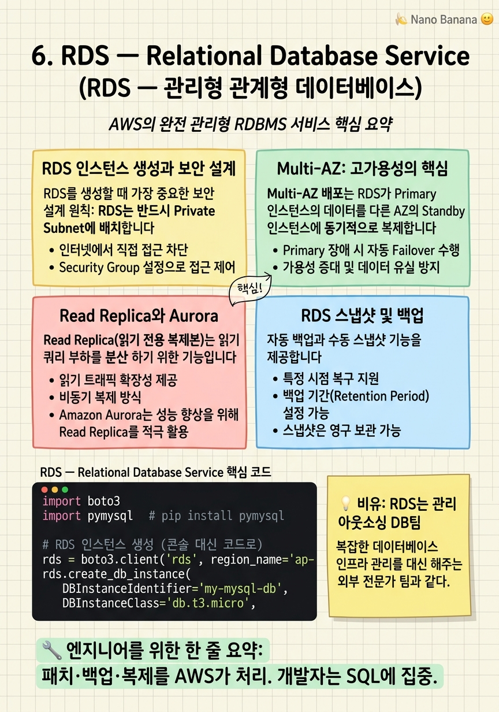

RDS — Relational Database Service

🎯 학습 목표
- RDS 인스턴스를 생성하고 데이터베이스에 연결할 수 있다
- Multi-AZ와 Read Replica의 차이를 설명할 수 있다
- 자동 백업과 수동 스냅샷을 구성할 수 있다
- RDS를 Private Subnet에 배치하는 보안 설계를 이해한다
- Aurora와 일반 RDS의 차이와 선택 기준을 설명할 수 있다
관계형 데이터베이스를 직접 운영하는 것은 생각보다 복잡합니다. MySQL 서버를 EC2에 설치한다고 가정해보면: 운영 체제 패치, MySQL 버전 업그레이드, 자동 백업 설정, 장애 시 복구, 복제(Replication) 구성, 모니터링 알림 설정 등 DB 쿼리 작성 외에도 수많은 운영 작업이 필요합니다.
RDS(Relational Database Service)는 이런 운영 부담을 AWS가 대신 맡아주는 완전 관리형(Fully Managed) 데이터베이스 서비스입니다. 하드웨어 프로비저닝, DB 소프트웨어 설치·패치, 자동 백업, 고가용성 복제를 AWS가 처리합니다.
 *이미지 출처: © Amazon Web Services, Inc. — [Multi-AZ DB instance deployments](https://docs.aws.amazon.com/AmazonRDS/latest/UserGuide/Concepts.MultiAZSingleStandby.html) (교육 목적 인용)*
RDS는 다음 데이터베이스 엔진을 지원합니다: MySQL, PostgreSQL, MariaDB, Oracle, Microsoft SQL Server, Amazon Aurora (MySQL/PostgreSQL 호환). 가장 많이 쓰이는 것은 MySQL, PostgreSQL, Aurora PostgreSQL입니다.
핵심 내용
RDS 인스턴스 생성과 보안 설계
RDS를 생성할 때 가장 중요한 보안 설계 원칙: RDS는 반드시 Private Subnet에 배치합니다. 인터넷에서 직접 DB에 접근할 수 있어서는 안 됩니다. 앱 서버(EC2, Lambda)만 DB에 접근할 수 있도록 Security Group을 설정합니다.
RDS 생성 시 주요 설정 항목:
- DB Engine: MySQL 8.0, PostgreSQL 16 등 - DB Instance Class: db.t3.micro (Free Tier 가능) ~ db.r8g.48xlarge - Storage: gp2/gp3 SSD, 최소 20GB, 최대 64TB. Storage Auto Scaling 활성화 권장 - Multi-AZ: 고가용성을 위해 프로덕션에서는 필수 활성화 - VPC/Subnet Group: Private Subnet에 배치 - Security Group: 앱 서버의 Security Group에서만 3306(MySQL) 또는 5432(PostgreSQL) 허용 - Backup: 자동 백업 보존 기간 7~35일 - Encryption: 저장 데이터 암호화 (프로덕션 필수)
RDS에 연결할 때는 엔드포인트(Endpoint)를 사용합니다. 형식: my-db.cluster-xxxxxx.ap-northeast-2.rds.amazonaws.com:3306. IP가 아닌 DNS 이름을 사용하기 때문에 내부적으로 IP가 바뀌어도 앱 코드를 수정할 필요가 없습니다.
Multi-AZ: 고가용성의 핵심
Multi-AZ 배포는 RDS가 Primary 인스턴스의 데이터를 다른 AZ의 Standby 인스턴스에 동기적으로 복제하는 고가용성 기능입니다. Primary가 장애를 겪으면(서버 고장, AZ 장애 등) AWS가 자동으로 Standby를 Primary로 승격시킵니다. 이 Failover는 보통 1~2분 내에 완료됩니다.
중요한 차이점: Multi-AZ는 읽기 성능 향상이 아닌 고가용성을 위한 것입니다. Standby 인스턴스는 트래픽을 처리하지 않습니다 — 장애 대비용입니다.
Failover가 발생하는 상황: - Primary DB 인스턴스 장애 - Primary가 실행 중인 AZ 장애 - DB 인스턴스 클래스 변경 (서버 업그레이드 시) - 운영 체제 패치 적용 시 - 수동 failover 테스트
Multi-AZ를 활성화하면 비용이 약 2배가 됩니다(Standby 인스턴스 유지). 개발/테스트 환경에서는 꺼도 되지만, 프로덕션에서는 필수입니다.
Read Replica와 Aurora
Read Replica(읽기 전용 복제본)는 읽기 쿼리 부하를 분산하기 위한 기능입니다. Primary에서 비동기적으로 복제된 별도의 DB 인스턴스이며, SELECT 쿼리만 처리합니다. 같은 리전 또는 다른 리전에 최대 15개까지 생성할 수 있습니다.
| 구분 | Multi-AZ Standby | Read Replica | |---|---|---| | 목적 | 고가용성 (장애 대비) | 읽기 부하 분산 | | 쿼리 처리 | X (장애 시만) | O (읽기 전용) | | 복제 방식 | 동기 | 비동기 | | Failover 시 자동 승격 | O | 수동 또는 Aurora는 자동 |
Amazon Aurora는 AWS가 자체 개발한 클라우드 최적화 관계형 DB로, MySQL과 PostgreSQL과 호환됩니다. 일반 RDS MySQL 대비 최대 5배, PostgreSQL 대비 최대 3배 빠른 성능을 제공합니다.
Aurora의 특징: - 스토리지가 컴퓨팅과 분리: 최대 128TB 자동 확장 - Aurora Serverless: 사용량에 따라 자동 스케일업/다운 - Aurora Global Database: 전 세계 리전에 복제, 로컬 읽기로 지연 시간 최소화 - Aurora Multi-Master: 여러 노드에서 쓰기 가능 (실험적)
비용은 일반 RDS보다 높지만, 성능과 가용성이 중요한 프로덕션에서 점점 더 많이 채택되고 있습니다.
💡 비유로 이해하기
RDS를 이해하는 가장 좋은 비유는 전문 DB 운영팀을 외부에 아웃소싱하는 것입니다. 직접 DBA(데이터베이스 관리자)를 고용하면: 서버 설치·설정, 야간 백업 스크립트 작성, 정기 패치, 장애 대응, 용량 계획 등 많은 업무가 생깁니다.
RDS를 사용하면 AWS 전문 팀이 이 모든 것을 처리합니다. 개발자는 CREATE TABLE, SELECT, INSERT 같은 SQL 쿼리에만 집중할 수 있습니다.
Multi-AZ는 사무실에 비상 발전기를 설치하는 것입니다. 정전(장애)이 나면 자동으로 비상 전원이 켜집니다. Read Replica는 바쁜 창구에 추가 직원을 배치하는 것입니다. 조회 업무가 폭주할 때 여러 Read Replica로 부하를 나눕니다.
💻 코드 예시
boto3로 RDS 인스턴스를 생성하고, Python에서 pymysql을 사용해 MySQL에 연결하는 예제입니다. IAM 인증을 사용하면 비밀번호 없이 연결할 수도 있습니다.
import boto3
import pymysql # pip install pymysql
# RDS 인스턴스 생성 (콘솔 대신 코드로)
rds = boto3.client('rds', region_name='ap-northeast-2')
rds.create_db_instance(
DBInstanceIdentifier='my-mysql-db',
DBInstanceClass='db.t3.micro',
Engine='mysql',
MasterUsername='admin',
MasterUserPassword='SecurePass123!',
DBName='myapp',
AllocatedStorage=20,
StorageType='gp3',
MultiAZ=False, # 학습용: 비활성화 (프로덕션은 True)
BackupRetentionPeriod=7,
VpcSecurityGroupIds=['sg-0123456789abcdef0'],
DBSubnetGroupName='my-db-subnet-group'
)
print("RDS 인스턴스 생성 중... (5~10분 소요)")
# DB 연결 (인스턴스가 생성된 후)
ENDPOINT = 'my-mysql-db.xxxxxx.ap-northeast-2.rds.amazonaws.com'
conn = pymysql.connect(
host=ENDPOINT,
user='admin',
password='SecurePass123!',
database='myapp',
connect_timeout=10
)
# 테이블 생성 및 데이터 삽입
with conn.cursor() as cursor:
cursor.execute("""
CREATE TABLE IF NOT EXISTS users (
id INT AUTO_INCREMENT PRIMARY KEY,
name VARCHAR(100),
email VARCHAR(100) UNIQUE
)
""")
cursor.execute("INSERT INTO users (name, email) VALUES (%s, %s)",
('Alice', 'alice@example.com'))
conn.commit()
print("✅ 데이터 삽입 완료")
conn.close()DBSubnetGroupName은 RDS가 배치될 서브넷 그룹으로, Private Subnet들을 묶어 미리 생성해야 합니다. MultiAZ=False는 학습 환경용 설정입니다. 실제 비밀번호는 코드에 하드코딩하지 말고 AWS Secrets Manager에 저장하고 런타임에 가져오는 방식을 사용하세요.
🏭 현업에서의 평가
✅ 시니어가 보는 것
- Multi-AZ와 Read Replica를 혼동하지 않고 올바르게 사용하는가
- 비밀번호를 Secrets Manager로 관리하는 보안 관행을 아는가
- Aurora Serverless를 언제 쓰고 언제 쓰지 않는지 판단할 수 있는가
⚠️ 레드 플래그
- RDS를 Public Subnet에 배치하고 외부에서 직접 접속하게 함
- 자동 백업을 끄거나 보존 기간을 0으로 설정
- MultiAZ를 비용 절감이라는 이유로 프로덕션에서도 끔
🎤 예상 인터뷰 질문
- 읽기 트래픽이 10배 급증했을 때 RDS에서 어떻게 대응하겠습니까?
- RDS 인스턴스를 다운타임 없이 더 큰 사이즈로 업그레이드하는 방법은 무엇입니까?
- RDS와 DynamoDB 중 어떤 상황에서 어떤 것을 선택하겠습니까?
✨ 핵심 요약
RDS = 관리형 DB
패치·백업·복제를 AWS가 처리. 개발자는 SQL에 집중.
Private Subnet 필수
RDS는 인터넷에서 직접 접근 불가능해야 한다.
Multi-AZ ≠ Read Replica
Multi-AZ는 고가용성, Read Replica는 읽기 성능 향상.
Aurora는 일반 RDS보다 빠르다
MySQL 5배, PostgreSQL 3배 성능. 스토리지 자동 확장.
비밀번호는 Secrets Manager에
코드에 DB 비밀번호를 절대 하드코딩하지 않는다.
자동 백업 7~35일 보존
Point-in-time recovery로 특정 시점으로 복구 가능.
DB Subnet Group 필수
Multi-AZ를 위해 여러 AZ의 Private Subnet을 묶어야 함.
연결 수 한계 주의
Lambda + RDS는 연결 폭발 문제 발생. RDS Proxy 사용 권장.